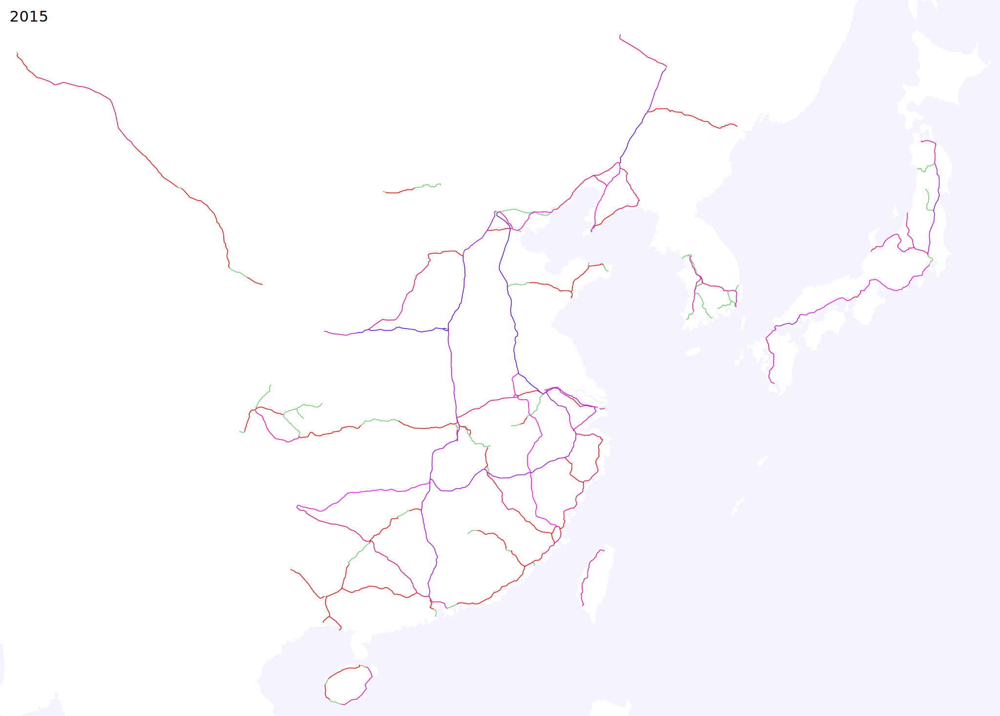
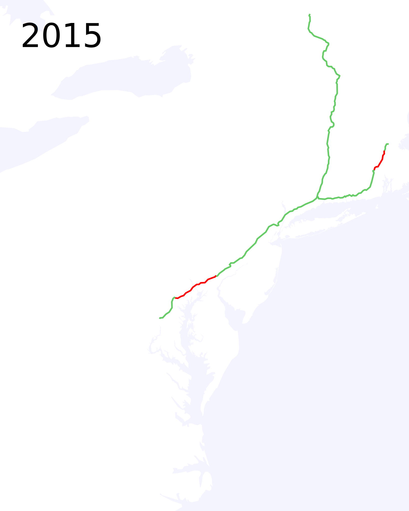
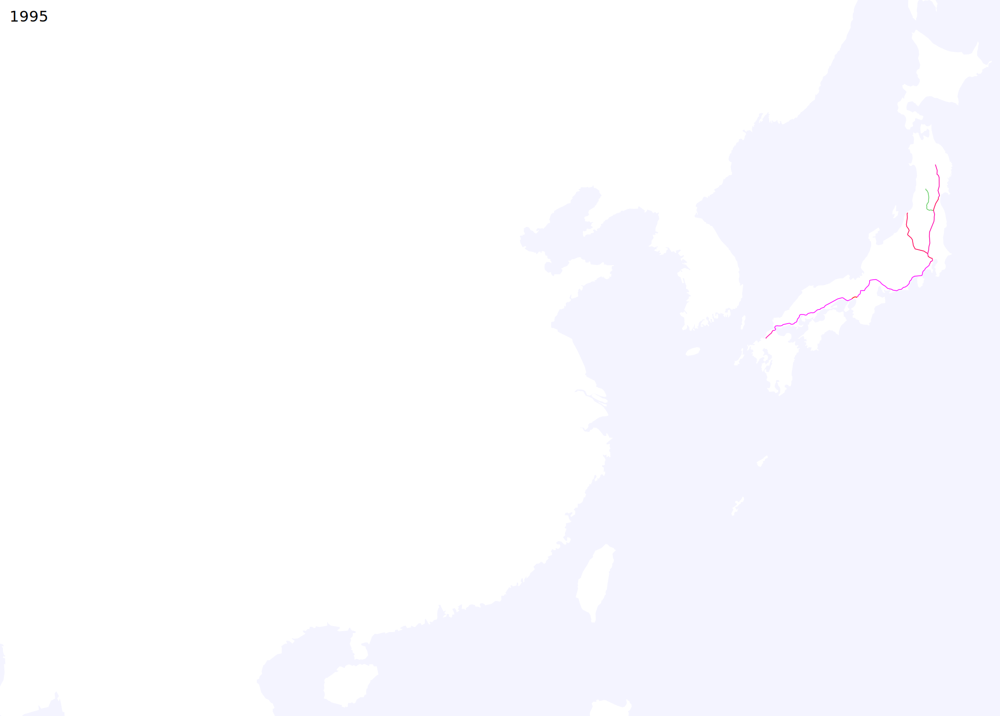
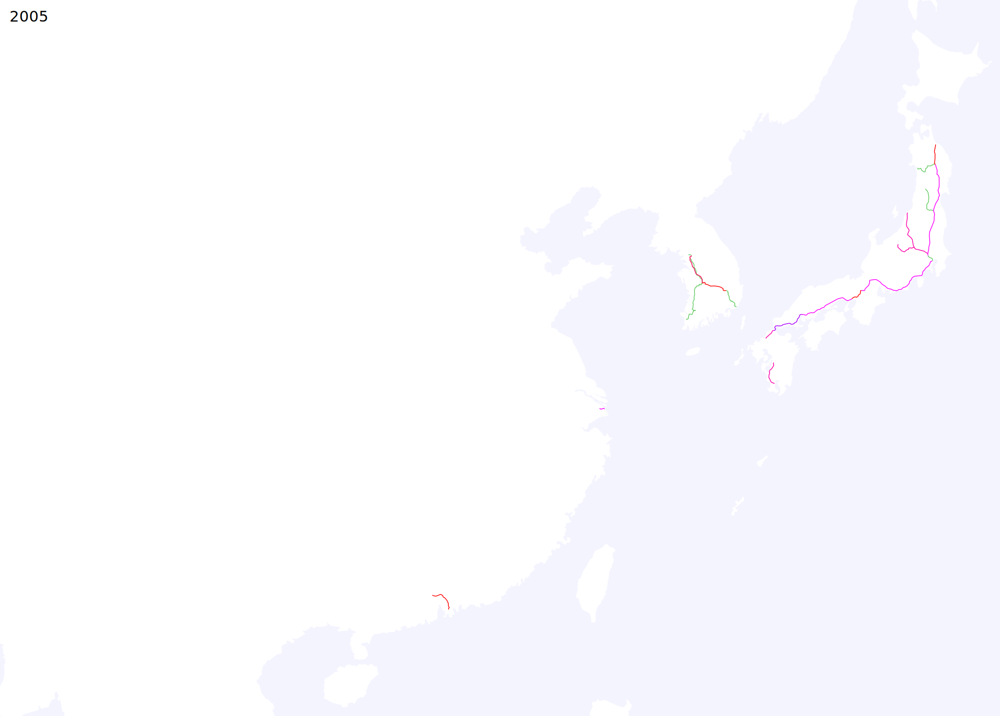
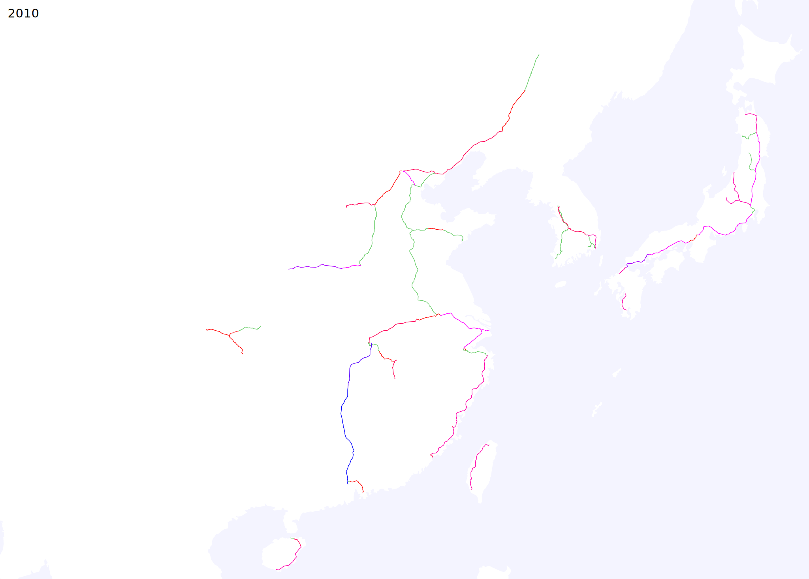
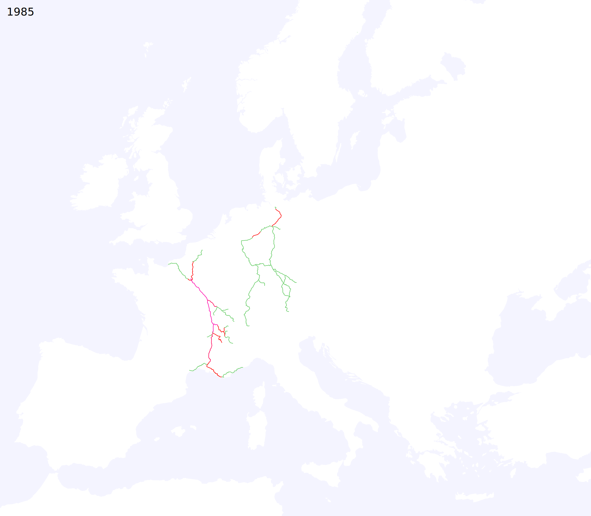
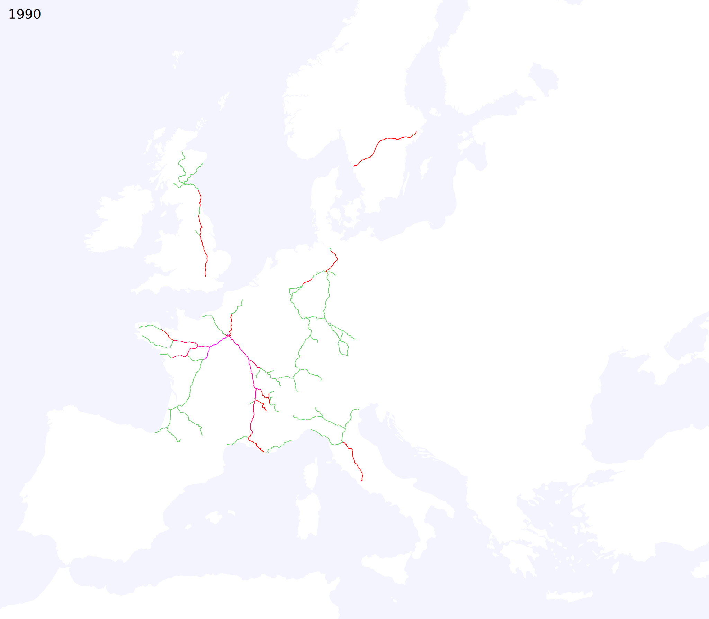
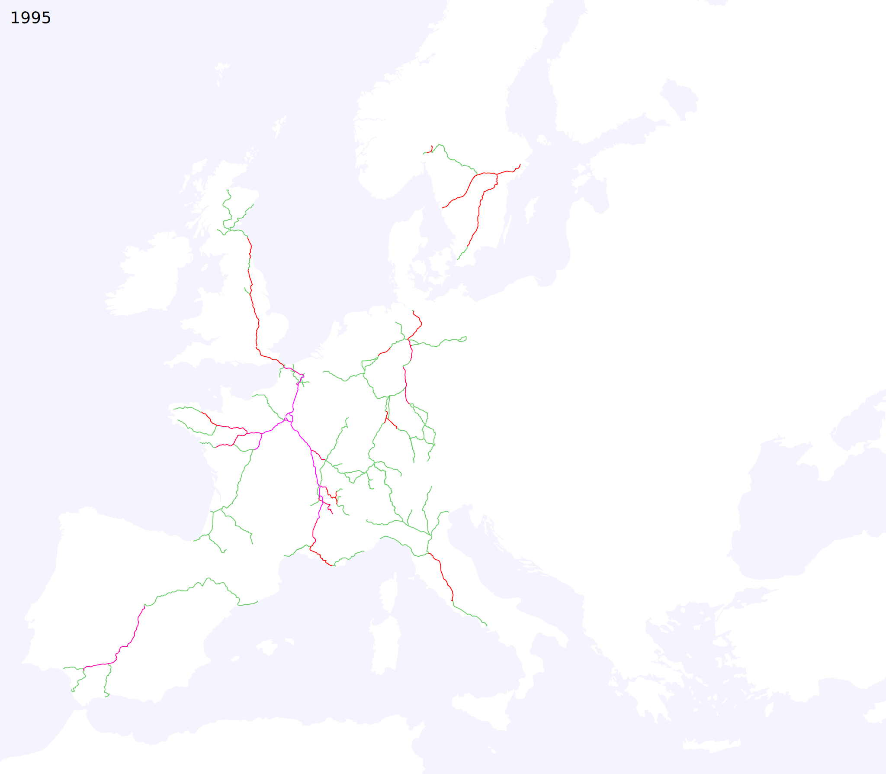
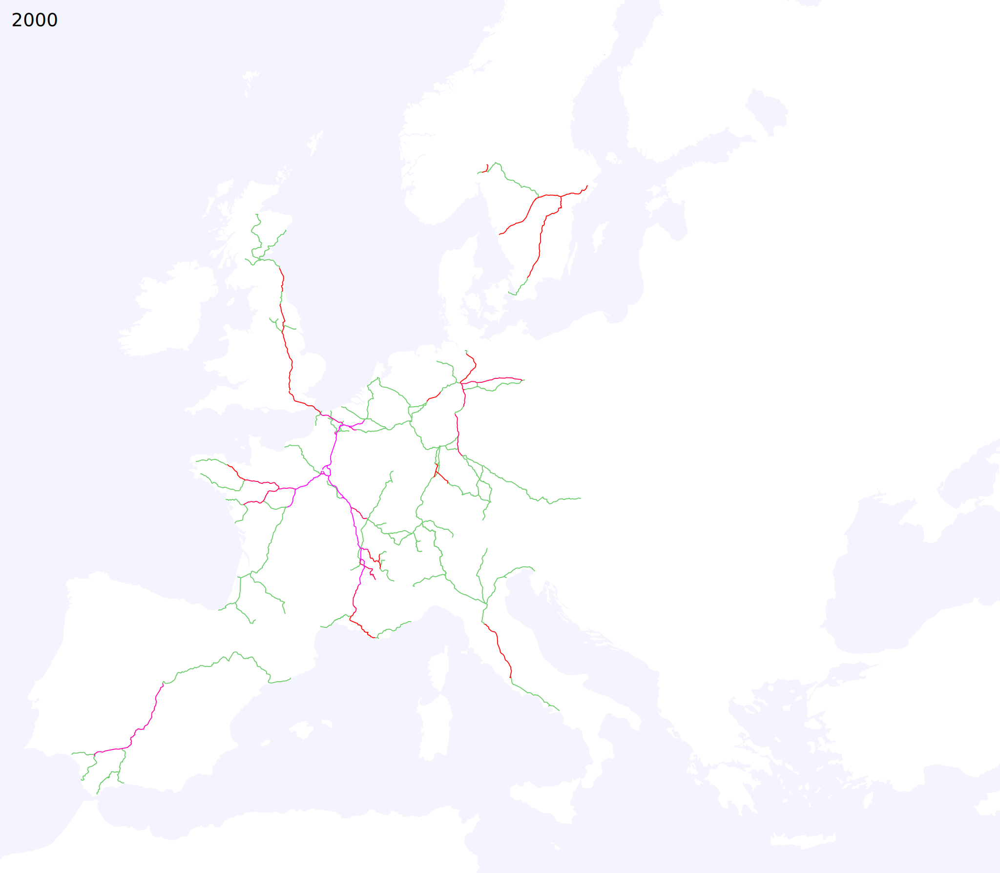
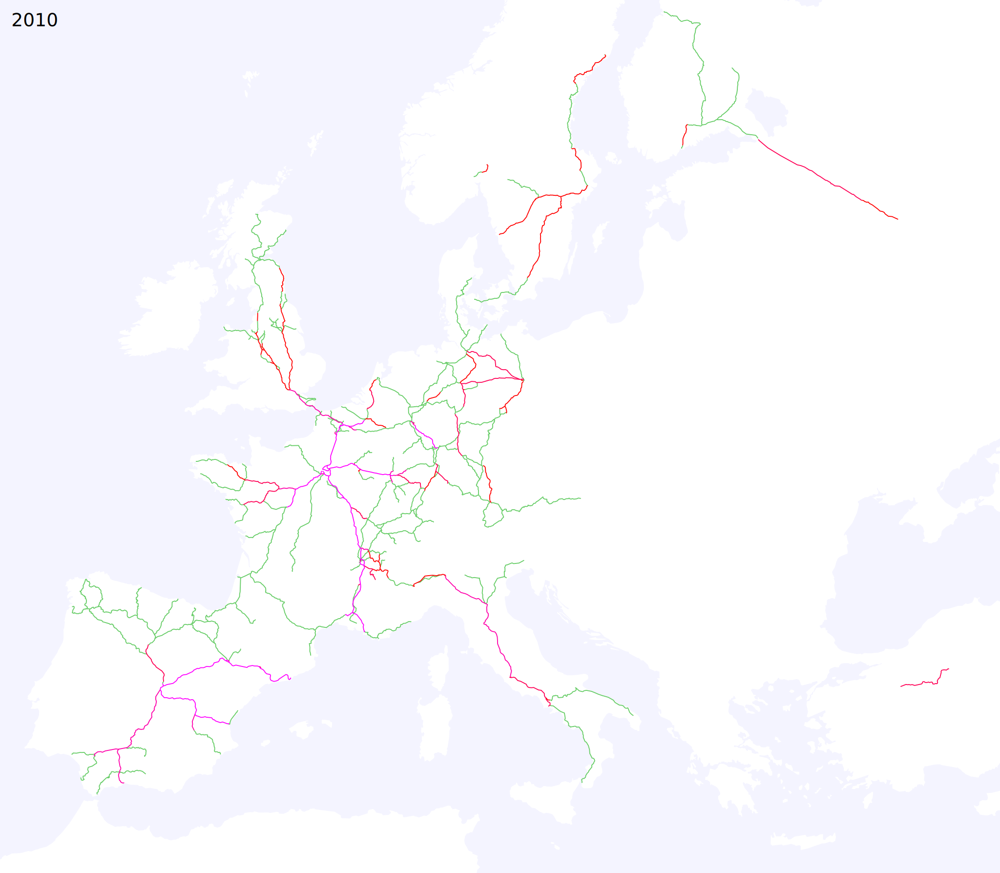

Asia

Europe

Northeast US

Uzbekistan

five years earlier (or press a) ---
five years later (or press s)
click here to animate
Based on service at the end of the year in question, excluding seasonal services.
Scale: ≈ 1000 km (approximately 0.25 CSS pixels per km)
Lines are coloured based on the speed of the fastest service using them, measured by average scheduled speed between consecutive stops.
| 150-175km/h | 175-200km/h | 200-225km/h | 225-250km/h | 250-275km/h | 275-300km/h | 300-325km/h | thru-running onto lower-speed lines |
Please send any corrections or questions to threestationsquare at gmail dot com.








By Alexander Rapp based on map data
 by OpenStreetMap contributors.
by OpenStreetMap contributors.